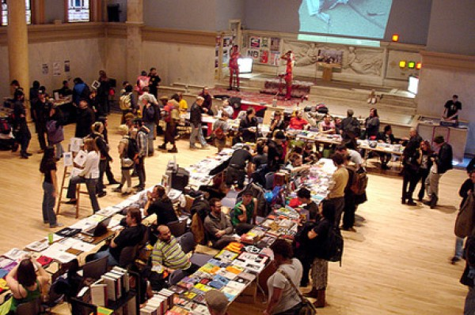
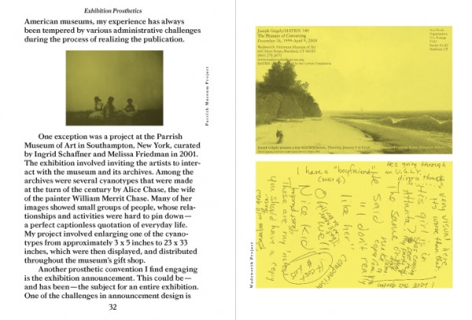
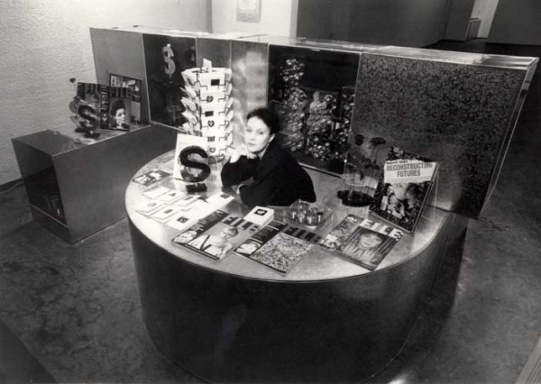

-
Fair Warning: Interview with AA Bronson
by Idiom November 4, 2010
In advance of the fifth annual New York Art Book Fair at P.S. 1, Stephen Squibb interviewed artist and Printed Matter president AA Bronson about the evolution of the event, art and publishing, and where cars ought to live.
Idiom: Going into the fifth annual NY Art Book Fair, how has the event evolved since it first began? Was this what you envisioned?
AA Bronson: When we began the NY Art Book Fair we were very aware of the fading importance of New York City as a center for art books. Not only had we lost a number of memorable art book stores in the recent past, but even museum stores were reducing their inventory and major publishers were dumbing down their titles. At the same time there was an explosion of local, often DIY activity that seemed to be just the tip of an iceberg. We wanted to bring together art book publishers of all types from around the world and create a gathering and an exchange that would have major repercussions, everyone from zinesters to artist-publishers to antiquarian dealers to non-profits to galleries to small and larger publishers. We thought we would start by putting out a few feelers and if our contacts were enthusiastic, pulling together a small and inexpensive but lively fair.
We started our research in June, 2006, and by mid-July decided to open with 30 exhibitors. By the time we opened in November we had 70 exhibitors, many from Europe, including a lively group of the socially and politically minded, curated by Max Schumann, which we called Friendly Fire. Josh Smith made a massive wall of individually silkscreened posters for us, and a full program of book launches and performances filled out the event, ending with a party and concert each day. Our biggest challenge has been not how to make the Fair grow, but how to get it to stop.
This year we have 280 exhibitors from 24 countries, a 40% increase over last year. I’m especially excited about the Contemporary Artists’ Books Conference, now in its third year, which accompanies the Fair. The keynote panel is a conversation between Christopher Wool, Josh Smith, and Richard Hell. And artists Rachel Harrison, Christian Holstad, William E. Jones, and Misaki Kawai have created new fundraising editions, which help keep the NY Art Book Fair free to the public–even the preview is free! Speaking of the preview, Nils Bech will be performing at the preview, and those who have not experienced his unique form of very queer performance/dance/song, have a treat indeed! There is more going on this year than I can possibly talk about here: see the website for hints of more to come.
My one fear is that the NY Art Book Fair will institutionalize as it ages. I hope that it will continue to be as fresh and spunky as Printed Matter is today, as it enters its 35th year. To do that, it needs to pay attention to inclusivity and to take its direction from artists themselves.

Idiom: I’m interested in this term ‘art books,’ as it seems to mean so many different things. There are certainly obvious candidates, but then are also those books that, by virtue of age or eccentricity, sort of become art books by default – and we bibliophiles certainly have our favorite examples, genres and series in this regard. One of the things that I and others appreciate about Printed Matter and the fair is just how open your criteria for these texts are. Can you speak a little bit about how you understand this hybrid form, ‘art books.’ both practically in terms of selecting entries for the fair, and perhaps in more speculative, historical or aesthetic sense?
AA B: The idea of the NY Art Book Fair is that it can represent every manifestation of the contemporary art book, from museum catalogs and coffee table monographs on the one hand to artists’ books, scholarly publications, and zines on the other. But we don’t choose books for the Fair, we choose publishers. Part of our interest is in creating a lively gathering which will bring together interesting people who are as captivated by publishing as we are. I don’t think ‘art books’ are a form at all, just a very loose category that can include everything from a $2 comic book to a $30,000 limited edition.
Idiom: How have you approached locating and selecting publishers?
AA B: Of course, as we operate a bookstore selling over 15,000 titles by over 5,000 artists, we are in touch with countless young publishers all over the world. We began by approaching our favorite publishers and inviting them to exhibit at the Fair, but once word got out, publishers began approaching us. This year, for the first time, we instituted an application process for new exhibitors, and received a lot of applications from publishers we were not previously aware of.
Idiom: Are there any publishers exhibiting at the fair for the first time that you are especially excited about?
AA B: There are many new exhibitors this year, including a raft of new exhibitors from The Netherlands, this year’s featured country. Kunstverein (Amsterdam) will present newly commissioned work by Adam Pendleton. Roma Publications, artist Mark Manders’ very special press, is joining us at last—we have been inviting them for several years. Other new Dutch exhibitors include FOAM Magazine, onomatopee, Post editions, SKOR, TRUE TRUE TRUE, and Valiz. I’m personally proud to have a group of Canadian artists showing their collaborative bookworks: Cliff Eyland together with the film-maker Guy Maddin, and Gareth Long together with Derek Sullivan. And Bedford books together with AA Bookshop (London) are presenting a special exhibition of new work by American artist Joseph Grigely that expands upon the recent publication Exhibition Prosthetics. Last and perhaps most anticipated of all is artist Paul Chan’s new press Badlands Unlimited: Paul will be reading from his new book Phaedrus Pron on Sunday afternoon.
Idiom: As someone who has maintained both an artistic and a publishing identity for so long – how do you see the two relating? Are there similarities or unexpected differences between these two practices?
AA B: Hmmm, good question. It’s not so much that there are similarities or differences between making art and publishing, it’s more like the two practices are intertwined. I often explore an idea through making a publication before turning it into something larger, or I might take something larger I am working on and turn it into a book. It’s not that the book becomes a memento of the project; rather the book is a way of thinking something through, and also moving it out into the world. I especially like the fact that a book is inexpensive and in multiple form, and that it can be held in libraries and schools, where large numbers of people can see it on an ongoing basis; while the artwork is often purchased and exhibited privately, in someone’s home, or even put into storage. To my mind both practices have their purpose. General Idea used to describe it like this: a car can be exhibited in a showroom, but ultimately it’s life is out on the streets.
Idiom: That’s wonderful. Can you speak a little bit about how both fields have evolved or changed over the years? Many would say art is healthier than publishing at present…
AA B: Publishing and contemporary art are both in extreme flux. We all know the story of the collapse of the publishing world, with sales of e-books surpassing those of traditional books, and publishing houses in crisis. But what about the explosion of independent publishing, and what about the extreme growth of the zine world? Publishing is not diminishing; it is transforming. The NY Art Book Fair has been growing by 40% or more each year: does that suggest the death of publishing? And the audience that we attract is primarily young people, in their twenties and early thirties. Again, does that suggest the death of publishing, or the birth of something new?
Similarly, the art world is in major flux. It’s not clear to me just what is going on, and I find the domination of the marketplace distressing, but it is clear that the role of the artist and of art in society is changing rapidly. The first artist to be featured on a popular magazine cover was Robert Longo on New York Magazine in 1986, and that marked the beginning of the shift. We can barely remember now that artists used to occupy a more scholarly thoughtful corner of the art world: now, they are celebrities. At the same time, artists have become researchers, and social workers: groups of artists working collaboratively have taken on activist roles, and work to investigate and transform social space. We might call this public art, but it is not public art as we have known it. Both SKOR (Amsterdam) and Creative Time (New York) are organizations that facilitate this other kind of art-making, and both are presenting publications at the NY Art Book Fair. And in the Artists and Activists room at the Fair there are many more artists, like the GuerrillaGirlBroadband and Red76, who work in this activist mode.
Idiom: How has your own work related to activism? In the past? Presently?
AA B: That’s a big question. But certainly during my twenty-five years as one of the three artists of General Idea, we were best known for our work relating to AIDS, which we began in 1987 and continued through 1994, when my two partners both died. There is a General Idea retrospective opening at the Musée d’art moderne de la ville de Paris on February 10, 2011, and it features many works from that series. Gregg Bordowitz has written a new book titled ImageVirus on General Idea’s AIDS projects and it will be available at the Afterall Books stand at the NY Art Book Fair. As you may know, I will be leaving both Printed Matter and the NY Art Book Fair in another week or so, in order to work on that exhibition, and to return to making art myself. I walked through the Fair as it was going together this morning, and it gives me great satisfaction to see what it has become, a dense and diverse gathering of people—publishers, artists, gallerists, curators, critics and so on—with books, magazines, catalogs and zines from more than two dozen countries.